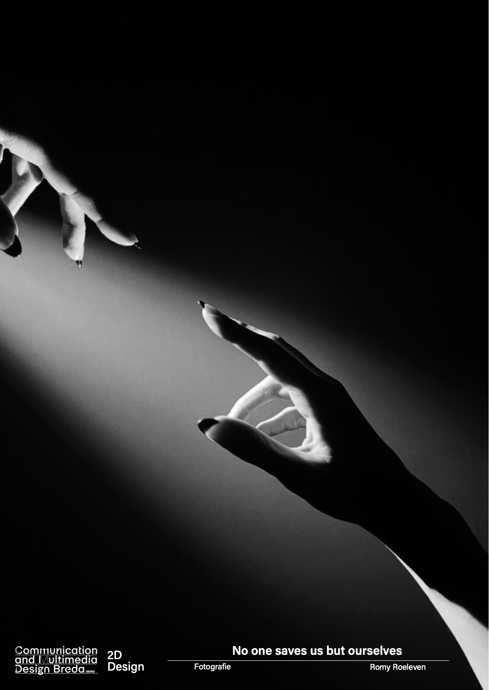
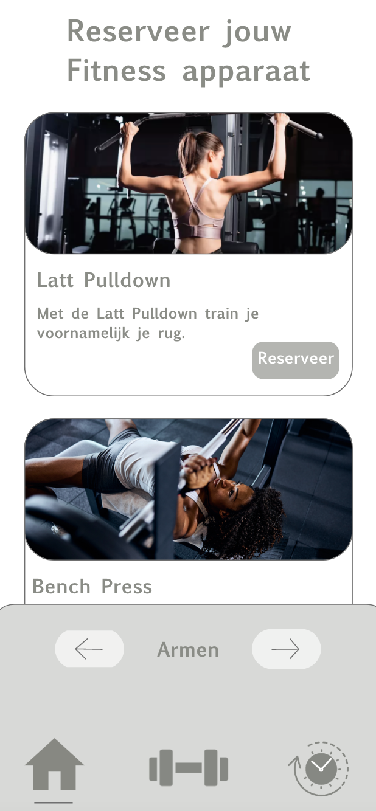
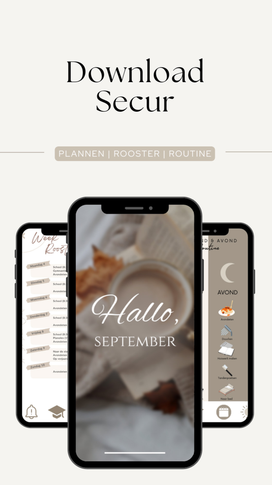
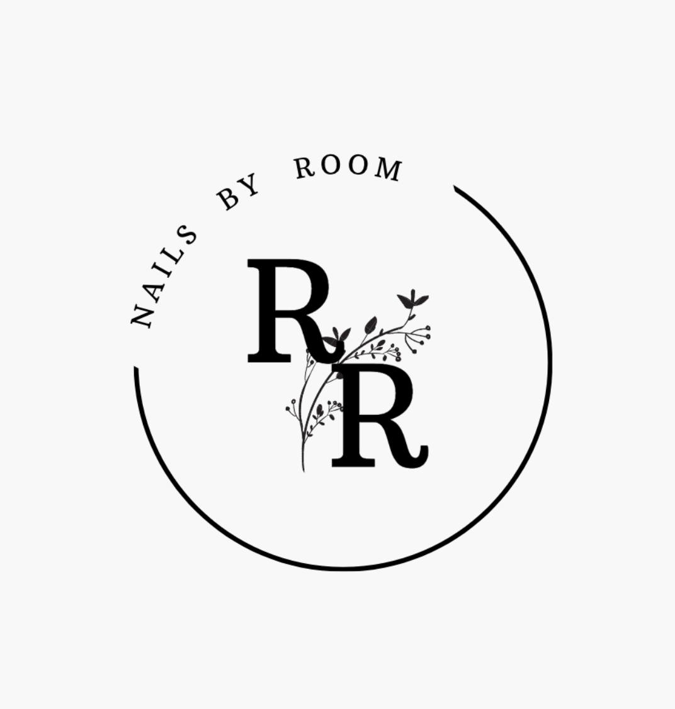

No one saves us but ourselves
Er zijn veel mensen die zich eenzaam voelen. Niet alleen ouderen voelen zich eenzaam maar ook jongeren kunnen daar last van hebben. Dit kan leiden tot allerlei gevolgen. Uiteindelijk heb je alleen jezelf.
Lees meer..

Fitness apparaat reserveren
Het meest vervelende wat er is als je wilt gaan sporten maar alles is bezet. Je staat daar maar een beetje en je weet niet waar je moet doen. Er is een goede oplossing...
Lees meer..
Buddy Fit
Buddy fit is een app voor mensen die een hondje willen nemen maar niet weten welk ras. Met behulp van vragen voorspelt deze app 3 soorten honden die het beste bij je passen.
Lees meer..

Secur
Secur is een app voor mensen die van structuur houden. Het is vooral een app gemaakt voor mensen met autisme. Door middel van schema’s en duidelijkheid geeft dit rust in hun hoofd.
Lees meer..
